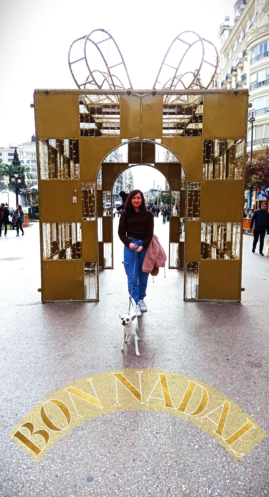
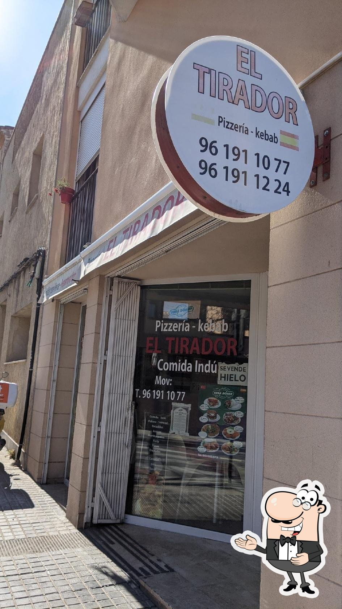

Et diu alguna cosa aquesta imatge?
Et diu alguna cosa aquesta imatge?
Ací comença un nou camí per a nosaltres que espere que emprenem amb alregria i il·lusió. Aquesta pàgina et servirà de guia per arribar a un estat tan desitjat per tu, i més en aquestes dates tan especials, que espere que recordes sempre.
Quan ens vam conèixer no m'agradava molt eixir, però amb tu vaig descobrir l'amor per l'aventura, i va ser en aquest lloc de la terreta on vam començar a frequentar passejos i sopars.
Et diu alguna cosa aquesta imatge?
Si no et sona, pots provar a recordar a què em vaig dedicar durant tres mesos en aquest edifici.
Com una de les teues virtuts és la intel·ligència imagine que ja sabràs de quin lloc es tracta. I si tens un dia dolent i no tens ni idea, aquesta foto resultarà molt reveladora.

La iaia
el pan de ajo
5 minutos
pakora
Sí, Ontinyent!
Esta es la nostra primera parada, allí haurem d'anar a recollir una postal.